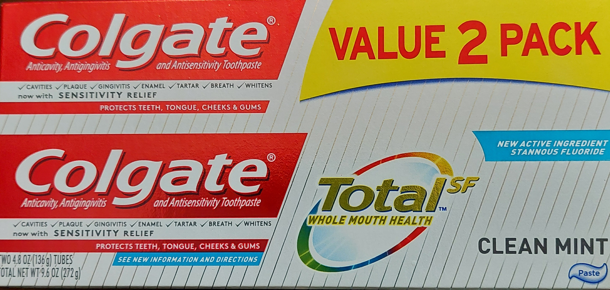

The Egyptians B.C constructed pyramid structures that not only stand today, but still baffle the mind as to the genius and creativity that built them.
Dr. James was one of the most interesting professors during the academic years of my training. In his class you were given 2 oral exams the whole semester then he gave you a grade. The first oral exam Dr. James asked you just one question and then listened to your answer. For the second oral exam however, he gave you the answer to a question and then asked you to explain why was that the answer to the question? Dr. James told his students, "I am not looking for the right answer, but I am listening to the way you THINK". He continued by saying, "Multiple choice exams are culturally biased, created for good test takers and support the multi-million dollar test preparation industry."
Here is a culturally biased I.Q. test question designed to trick the Limbic and Hypothalamus lobes of the mind;
Which PHRASEOLOGY best describes the meaning of the picture below?
 Photo by Dr. Colin Ross
A) White like snow.
B) FL for Fluoride not Florida.
C) I get around.
D) 2 for the price of one
The answer is C. "I get around" which was a song, (Phraseology), written by Rap artist Tu Pak Shakur. The coloring around the word "2 pack" will help the limbic/hypothalamic lobes of a person familiar with rap culture feel and then guess that "I get around" is the right answer. But even if you knew that the word Phraseology just means music, a mind devoid of an experience with rap music would pick answer A. "White like snow" is a song. Many people are not aware that Behavioral learning psychologists work for the standardized test writing and standardized test preparation INDUSTRIES.
The Psychologist gets test questions written by a test writer and then will rearrange the test question to culturally/psychologically trick the mind of the test taker into picking the wrong answer.
TEST preparation psychologists however will unravel the cultural bias and psychological tricks played on the mind so that a 1.6 billion dollar test preparation industry teaches students how to pass exams but not master material.
Hence, many clinicians today for example, would not know how to use a simple stethoscope to differentiate a left sided versus a right sided heart murmur because real live patients either breathe in or out but do not present to the office with multiple choice options written on their chest. This is why Dr. James either asked you a question or asked why this was the right answer to a question because dissertations great or small produce creative thinking scholars.
Photo by Simon Berger on UnsplashAt Teaching The World International Inc. we encourage students to take test preparation courses to pass any standardized exams, but we have created a research based program to help students answer questions or find the reason for the right answer by MASTERING material in their learning style. The only way one builds anything that will withstand the test of time is by thinking like an Egyptian B.C.